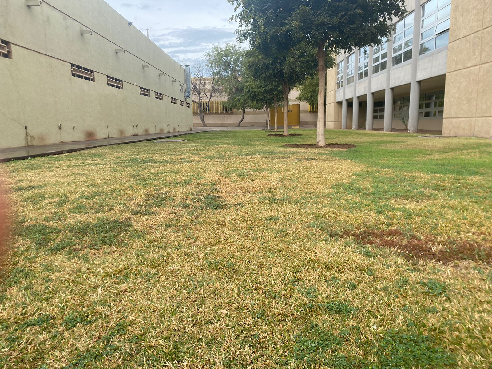

En este proyecto, la iniciativa se centra en la instalación de más bancas y la creación de áreas comunes verdes en el campus de ITSON Nainari para promover actividades sociales y educativas entre los estudiantes.
El plan contempla identificar zonas estratégicas dentro del campus donde se puedan establecer estos espacios verdes, teniendo en cuenta la accesibilidad y la distribución equitativa en todas las áreas del campus. Se priorizarán áreas cerca de edificios académicos y de alta concurrencia estudiantil para maximizar su utilidad.